Времена́ го́да — части, которые выделяют в годовом цикле.
Календарные времена года — в большинстве стран мира принято деление года на четыре сезона, по три календарных месяца в каждом. Однако индийский календарь, например, делит год на 6 сезонов, по 2 месяца в каждом, календарь саамов — на восемь, а в древности в некоторых культурах был широко распространён трёхсезонный календарь. В Китае эпохи Инь в году было лишь два сезона: первая половина года — чунь (кит. упр. 春) и вторая половина года — цю (кит. упр. 秋), позднее означавшее в китайском языке смену сезонов года слово чуньцю (кит. упр. 春秋) стало обозначать историческую хронику.
Лето
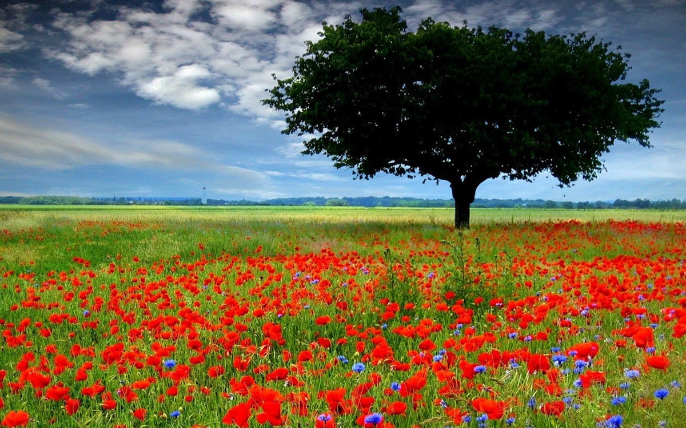
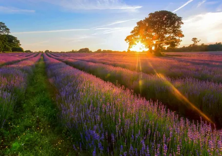
ЛЕ'ТО, а, мн. а́ (ле́та поэт. устар.), ср. 1. только ед. Самое теплое время года, между весной и осенью. За весной, красой природы, лето красное пройдет, и туман и непогоды осень поздняя несет. Пшкн. 2. Р. мн. лет употр. в качестве р. мн. к год во всех знач., кроме 4. Пять лет. Несколько лет тому назад. 3. только мн. Возраст, года́. В молодые наши ле́та даем поспешные обеты. Бртнскй. Младые ле́та отдай любви. Пшкн. Женщина пожилых лет. Молод не по летам. Во цвете лет. Мы одних лет. В мои лета́ не должно сметь свое суждение иметь. Г
Осень
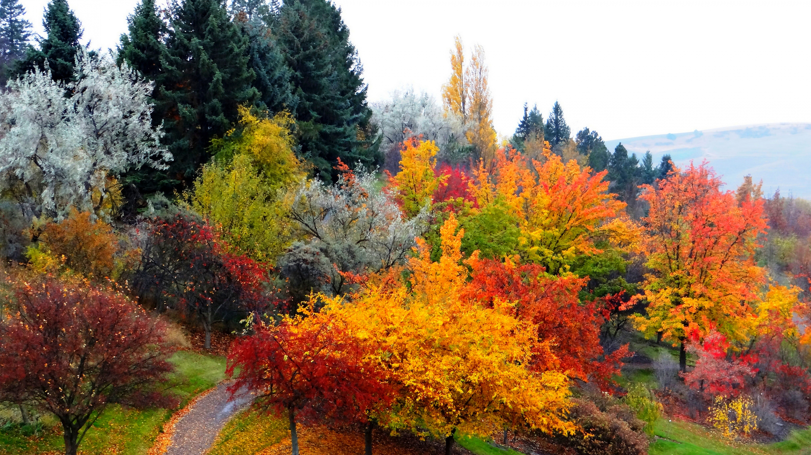
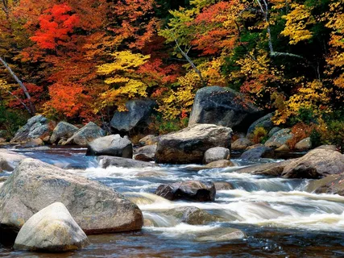
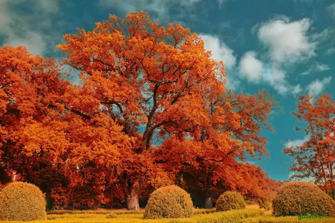
О́СЕНЬ, -и, ж. Время года между летом и зимой. Уж небо осенью дышало, Уж реже солнышко блистало, Короче становился день, Лесов таинственная сень С печальным шумом обнажалась. Пушкин, Евгений Онегин. Поздняя осень. Грачи улетели, Лес обнажился, Поля опустели. Н. Некрасов, Несжатая полоса. || перен. Пора увядания, старости, приближения конца чего-л. Мне было жаль своей любви, для которой, очевидно, тоже наступила уже своя осень. Чехов, Моя жизнь. Тебе исполнилось сегодня тридцать восемь. И, может быть, хоть с виду весела, Ты с грустью думаешь: подходит осень. Щипачев, Тебе исполнилось…
Зима
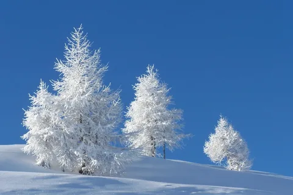
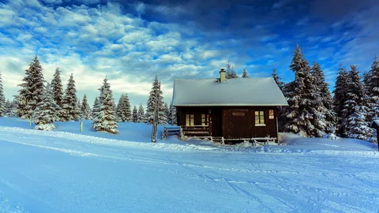
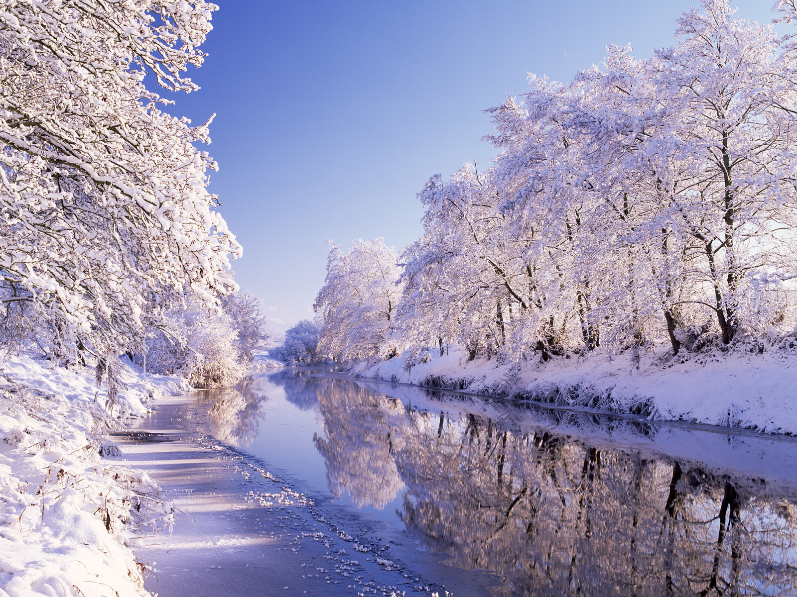
ЗИМА́, -ы́, вин. зи́му, мн. зи́мы, ж. Самое холодное время года, наступающее за осенью и сменяющееся весной. Суровая зима. Снежная зима. Зима наступила. □ Люблю зимы твоей жестокой Недвижный воздух и мороз, Бег санок вдоль Невы широкой, Девичьи лица ярче роз. Пушкин, Медный всадник. Пришла зима. Выпал глубокий снег и покрыл дороги, поля, деревни. Короленко, Слепой музыкант.
Весна
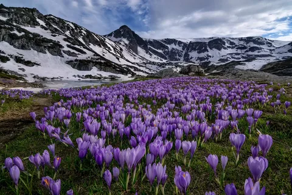
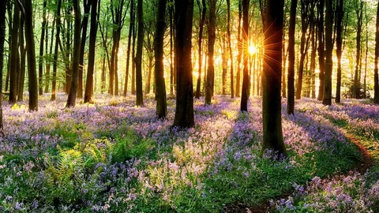
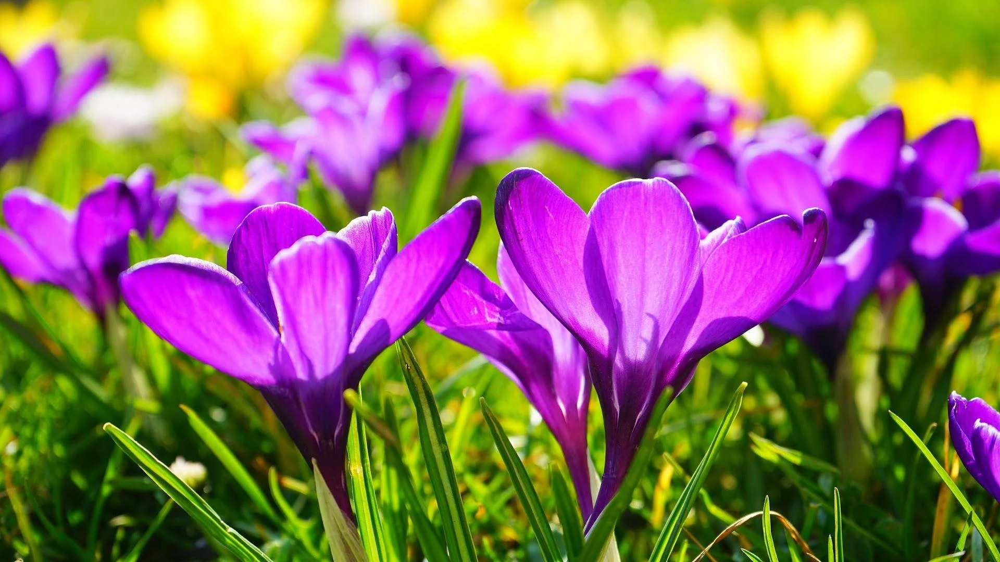
ВЕСНА́, -ы́, мн. вёсны, -сен, -снам, ж. Время года между зимой и летом. Полюбуйся: весна наступает, Журавли караваном летят, В ярком золоте день утопает, И ручьи по оврагам шумят. И. Никитин, Полно, степь моя, спать беспробудно. || перен. Пора расцвета, молодости. Куда, куда вы удалились, Весны моей златые дни? Пушкин, Евгений Онегин. [Я] увидел чудную красавицу, для которой едва настала первая весна. Достоевский, Елка и свадьба.